Candi Borobudur
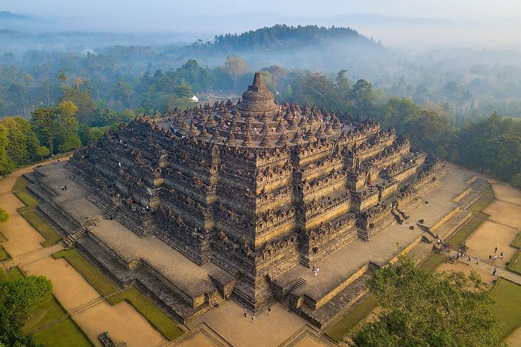Sejarah Singkat Candi Borobudur
Sejarah singkat Candi Borobudur berkaitan dengan masuknya agama Buddha di Indonesia seperti dikutip dari e-Modul Mengenal Arsitektur Tradisional Indonesia karya Arifin Suryo Nugroho. Candi Borobudur dibangun oleh para penganut Buddha Mahayana pada masa kejayaan Dinasti Syailendra. Borobudur pertama kali dibangun atas inisiatif Raja Samaratungga sekitar tahun 824 Masehi. Meski begitu, Candi Borobudur selesai dibangun menjelang tahun 900 Masehi pada masa pemerintahan Ratu Pramudawardhani, putri Raja Samaratungga. Arsitek yang berjasa dalam merancang candi tersebut ialah Gunadharma. Kabarnya, kemegahan Borobudur sempat sirna berabad-abad terkubur tanah dan debu vulkanik yang diperkirakan efek erupsi Gunung Merapi. Namun, candi tersebut berhasil direstorasi kembali oleh pemerintahan Thomas Stamford Raffles saat menjabat Gubernur Jenderal di Pulau Jawa tahun 1911. Kala itu Raffles meminta bantuan Insinyur Belanda Christian Cornelius untuk memeriksa kondisi bangunan Candi Borobudur yang terkubur dan membenahinya. Candi Borobudur dinobatkan sebagai Situs Warisan Dunia UNESCO pada 1991 karena beragam alasan di antaranya merupakan kompleks candi terbesar di Indonesia.
Harga Tiket Masuk : Rp.120.000/person
Candi Prambanan
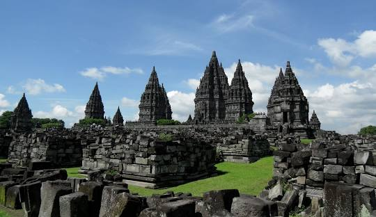Sejarah Singkat Candi Prambanan
Candi Prambanan atau Candi Roro Jonggrang menjadi salah satu situs warisan dunia yang diakui UNESCO di Jawa Tengah. Candi Prambanan merupakan Candi Hindu terbesar di Indonesia yang dibangun pada abad ke-9 Masehi oleh Rakai Pikatan. Candi Prambanan didirikan sebagai bentuk pemujaan kepada tiga Dewa besar Hindu, yaitu Brahma (Dewa Pencipta), Wisnu (Dewa Pemelihara), dan Siwa (Dewa Pemusnah), ketiganya dikenal sebagai Trimurti. Denah asli Candi Prambanan berbentuk persegi panjang yang terdiri dari halaman luar dan tiga pelataran, yaitu Jaba (pelataran luar), Tengahan (pelataran tengah) dan Njeron (pelataran dalam). Halaman luar merupakan area terbuka yang mengelilingi pelataran luar. Pelataran luar berbentuk bujur dengan luas 390 meter persegi.
Harga Tiket Masuk : Rp.50.000/person
Candi Mendut
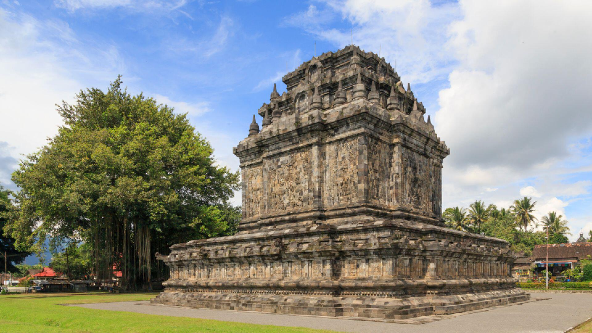Sejarah Singkat Candi Mendut
Candi Mendut adalah salah satu candi bercorak Budha yang cukup populer di Indonesia. Candi Mendut ini berada dekat dengan Candi Borobudur, jaraknya sekitar 3 km. Menurut sejarah Candi Mendut, Candi Borobudur memiliki kaitan yang erat dengan Candi Pawon. Nama Mendhut berasal dari kata Venu, Vana, Mandira yang berarti candi yang berada di tengah hutan bambu. Menurut J.G. de Casparis Candi Mendut didirikan pada masa kerajaan dinasti Syailendra pad tahun 824 M. Hal ini sama dengan isi yang ada di Prasasti Karangtengah per tahun 824 M. Dalam prasasti tersebut terdapat tulisan bahwa Raja Indra membangun sebuah bangunan suci dan bangunan tersebut diberi nama Wenuwana yang artinya hutan bambu. Wenuwana ini diartikan oleh de Casparis dengan nama Candi Mendut. Dengan menganggap itu, maka sejarah Candi Mendut sudah dimulai sebelum Candi Borobudur. Umur candi ini lebih tua dari Candi Borobudur yang merupakan salah satu candi terbesar yang pernah masuk ke 7 keajaiban dunia. Candi ini ditemukan kembali pada tahun 1836, semua bagian candi ditemukan kecuali bagian atap candi. Candi ini mulai diperbaiki kembali pada tahun 1897 sampai 1904 oleh Pemerintahan Hindia Belanda. Dan hasil perbaikan tersebut berhasil mengembalikan bagian kaki dan tubuh candi. Walaupun sudah berhasil, tetapi masih ada bagian candi yang belum diperbaiki. Empat tahun kemudian, Van Erp menjadi pemimpin pada perbaikan Candi Mendut tahap kedua. Semua bagian diperbaiki termasuk atap, pemasangan stupa, dan beberapa puncak atap candi.
Harga Tiket Masuk : Rp.10.000/person
Candi Ratu Boko
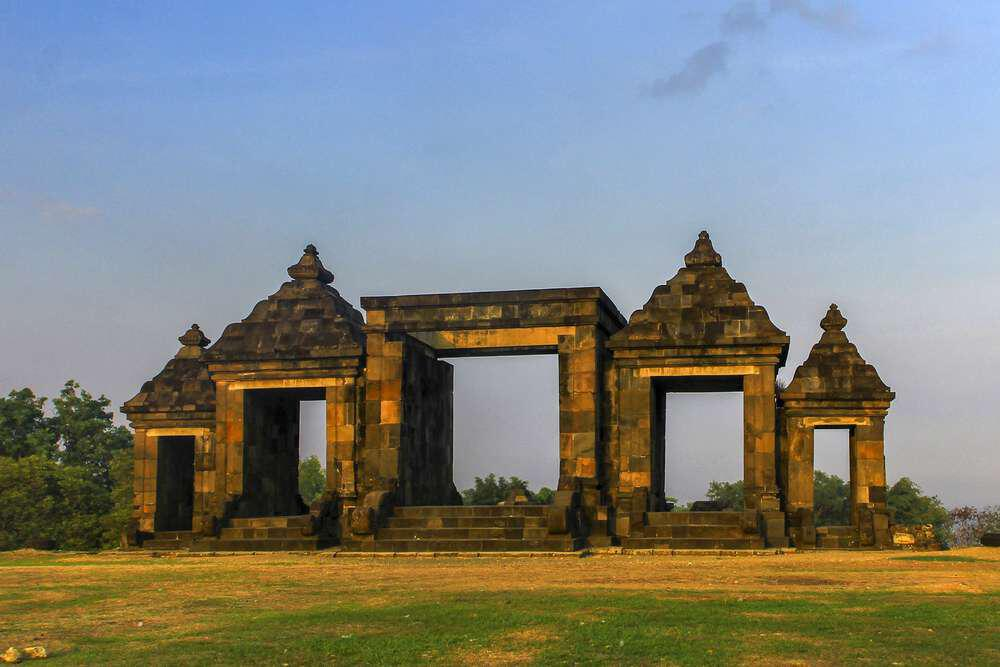Sejarah Singkat Candi Ratu Boko
Candi Ratu Boko merupakan situs purbakala yang berada di 3 kilometer sebelah selatan Candi Prambanan, 18 kilometer sebelah timur Kota Yogyakarta. Luas keseluruhan komplek Candi Boko sekitar 25 hektar. Istana Ratu Boko ini pada zaman dahulu merupakan bangunan yang megah yang dibangun semasa pemerintahan Rakai Panangkaran yang merupakan salah satu keturunan Wangsa Syailendra. Istana Ratu Boko ini semula bernama Abhayagiri Vihara yang artinya biara di tengah bukit penuh dengan kedamaian. Istana ini didirikan sebagai tempat untuk menenangkan diri dan fokus kepada kehidupan yang lebih abadi. Saat berada dalam istana ini kamu akan merasakan suasana yang lebih tenang dan damai dan bisa memandang keindahan Kota Yogyakarta, Candi Prambanan, dan Gunung Merapi.
Harga Tiket Masuk : Rp.20.000/person
Candi Ijo
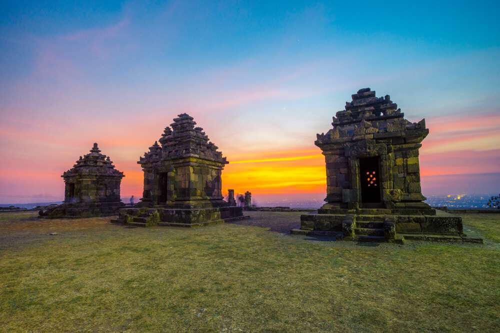Sejarah Singkat Candi Ijo
Candi Ijo dibangun sekitar abad ke-9. Komplek candi terdiri dari 17 struktur bangunan yang terbagi dalam 11 teras berundak. Peletakan bangunan pada tiap teras berdasarkan pada kesakralannya dan bangunan yang berada di teras tertinggi merupakan bangunan yang paling sakral. Saat ini bangunan yang masih utuh terletak pada teras ke-11. Di teras tertinggi tersebut, terdapat empat bangunan berupa satu candi utama dan tiga Candi Perwara. Terletak di selatan komplek Istana Ratu Boko, Candi Ijo berdiri dengan gagahnya. Bangunannya yang berada di lereng bukit menjadikan candi ini sebagai candi dengan lokasi tertinggi di Yogyakarta. Dari teras candi, kamu bisa menyaksikan pemukiman penduduk dan area perladangan di bawah, burung-burung besi yang landing, maupun take off dari Bandara Adi Sutjipto, landskap Merapi, hingga pemandangan mentari senja. Candi Ijo terletak pada ketinggian 410 meter di atas permukaan laut sehingga menjadi komplek candi dengan lokasi tertinggi di Yogyakarta. Di sekitar Candi Ijo, terdapat lokasi penambangan Batu Gamping. Area penambangan yang berupa tebing-tebing kapur berwarna putih ini kerap dijadikan lokasi pemotretan. Orang-orang sering menyebutnya sebagai White Canyon.
Harga Tiket Masuk : Rp.10.000/person
Candi Plaosan
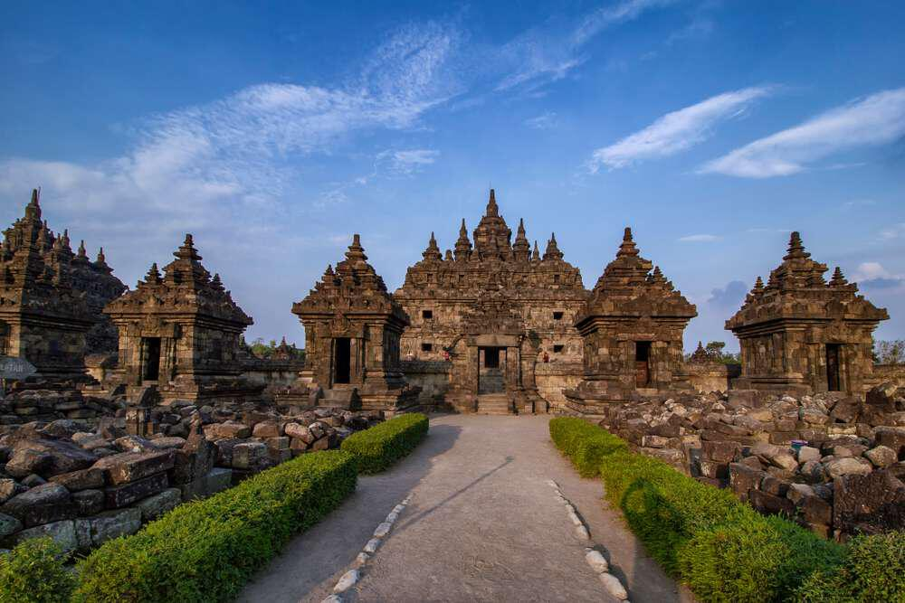Sejarah Singkat Candi Plaosan
Candi Plaosan merupakan sebuah kompleks bangunan kuno yang terbagi menjadi dua, yaitu kompleks Candi Plaosan Lor (lor dalam bahasa Jawa berarti utara) dan kompleks Candi Plaosan Kidul (kidul dalam bahasa Jawa berarti selatan). Candi Plaosan merupakan candi Buddha yang diperkirakan dibangun pada masa pemerintahan Rakai Pikatan dari Kerajaan Mataram Hindu, yaitu pada awal abad ke-9 M. Meskipun Candi Plaosan merupakan candi Budha, namun bangunan candi ini mengandung unsur arsitektur Budha dan Hindu. Candi Induk [laosan di utara memiliki relief yang menggambarkan tokoh-tokoh wanita. Sedangkan Candi Induk selatan memiliki relief yang menggambarkan tokoh-tokoh laki -laki. Kedua candi ini dikelilingi oleh 116 stupa perwara dan juga parit buatan.
Harga Tiket Masuk : Rp.10.000/person
Candi Kalasan
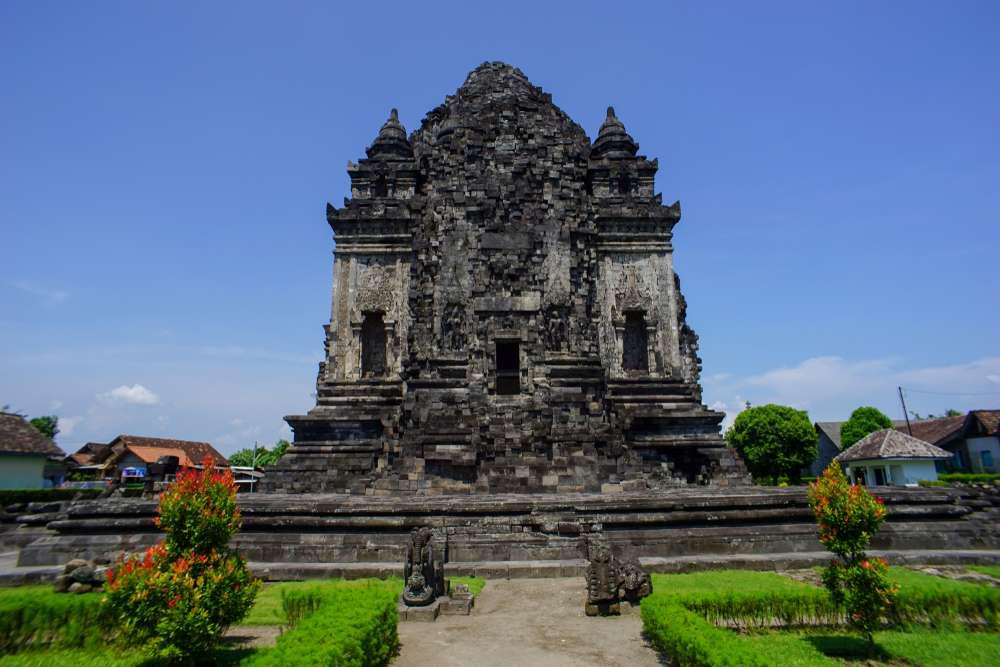Sejarah Singkat Candi Kalasan
Candi Kalasan merupakan sebuah bangunan cagar budaya yang dikategorikan sebagai candi umat Buddha. Berdasarkan prasasti Kalasan bertarikh 778 yang ditemukan tidak jauh dari candi ini menyebutkan tentang pendirian bangunan suci untuk menghormati Bodhisattva wanita, Tarabhawana, dan sebuah vihara untuk para pendeta. Penguasa yang memerintah pembangunan candi ini bernama Maharaja Tejapurnapana Panangkaran (Rakai Panangkaran) dari keluarga Syailendra. Candi Kalasan memiliki lapisan penutup candi yang dinamakan Bajralepa, yaitu semacam plesteran di ukiran batu halus. Detail dari hiasan Bajralepa ini yang merupakan salah satu ciri Candi Kalasan. Denah bangunan Candi Kalasan berbentuk persegi. Atapnya segi delapan dan puncaknya berbentuk dagoba (stupa). Tubuh dan atap candi dihias dengan ukiran-ukiran yang sangat indah. Terdiri dari relung-relung, sulur-sulur, arca-arca Budha, dagoba-dagoba dan arca Gana, yaitu manusia kerdil berperut buncit yang biasanya memikul barang.
Harga Tiket Masuk : Rp.10.000/person
Candi Pawon
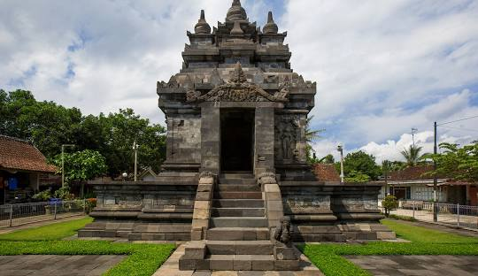Sejarah Singkat Candi Pawon
Candi pawon diketemukan pada akhir abad ke-19 dalam keadaan rusak tertimbun semak-semak belukar dan mulai diperbaikipada tahun 1903. Candi Pawon juga mengalami pemugaran yang dilaksanakan sejak tahun 1897 – 1904. Kemudian dilanjutkan lagi oleh Van Erp pada tahun 1908. Bangunan pemujaan ini termasuk salah satu Candi Buddha yang diperkirakan didirikan oleh Dinasti Syalendra antara abad VIII – IX Masehi, akan tetapi waktu pembangunan secara pasti tidak diketahui karena belum ada data-data yang cukup kuat. Menurut Casparis, Candi Pawon merupakan tempat penyimpanan abu jenazah Raja Indra (782 – 812 M), ayah Raja Samarrattungga dari Dinasti Syailendra. Dalam ruangan di tubuh Candi Pawon, diperkirakan semula terdapat Arca Bodhhisattva, sebagai bentuk penghormatan kepada Raja Indra yang dianggap telah mencapai tataran Bodhisattva. Para ahli berpendapat bahwa Candi Pawon merupakan pintu gerbang Candi Borobudur, sebagai tempat umat membersihkan badan dan pikirannya dari kekotoran batin. Nama Candi Pawon tidak dapat diketahui secara pasti asal-usulnya. Ahli epigrafi J.G. de Casparis menafsirkan bahwa Pawon berasal dari bahasa Jawa ‘awu” yang berarti ‘abu’, mendapat awalan pa- dan akhiran –an yang menunjukkan suatu tempat. Dalam bahasa Jawa sehari-hari kata pawon berarti ‘dapur’, akan tetapi de Casparis mengartikannya sebagai ‘perabuan’ atau tempat abu. Penduduk setempat juga menyebutkan Candi Pawon dengan nama Brajanalan. Karena terletak di Dusun Brojonalan (Brajanalan). Kata ini mungkin berasal dari kata bahasa Sanskerta vajra yang berarti ‘halilintar’ dan anala yang berarti ‘api’. Di dalam bilik candi konon terdapat arca. Dalam Prasasti Karang Tengah disebutkan bahwa arca tersebut mengeluarkan vajra (sinar). Pernyataan tersebut menimbulkan dugaan bahwa arca Bodhisattwa tersebut dibuat dari perunggu. Menurut Prof. Dr. R.M Poerbatjaraka, Candi Pawon ini adalah Upa Angga, artinya bagian dari Candi Borobudur, seperti pawon bagian dari rumah.
Harga Tiket Masuk : Rp.10.000/person
Candi Sambisari
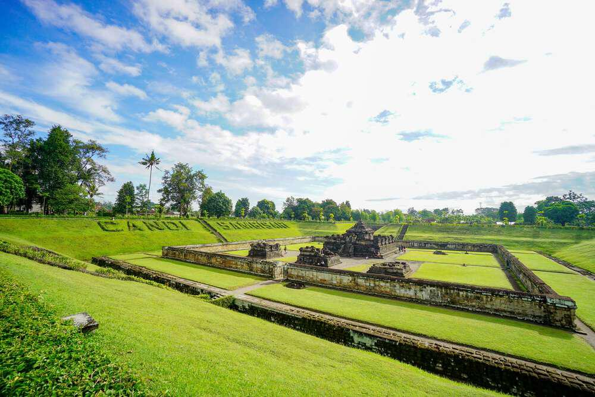Sejarah Singkat Candi Sambisari
Candi Sambisari merupakan candi Hindu Siwa yang berada di Kalasan, Yogyakarta. Candi ini diperkirakan dibangun pada dekade awal abad ke-9 pada masa pemerintahan Raja Rakai Garung yang berkuasa di Kerajaan Mataram Kuno dari Wangsa Syailendra. Posisi dasar Candi Sambisari terletak 6,5 meter di bawah permukaan tanah ketika ditemukan, kemungkinan besar hal ini terjadi karena candi tertimbun lahar dari Gunung Merapi yang meletus dan menimbulkan bencana dahsyat pada awal abad ke-11 (kemungkinan tahun 1006). Hal ini terlihat dari banyaknya batu material vulkanik di sekitar candi. Kompleks Candi Sambisari dikelilingi oleh dua lapis pagar batu. Pagar luar berdimensi 50 m × 48 m, berupa pagar batu rendah. Lapisan pagar dalam terbuat dari batu berketinggian 2 m dengan tebal 50 cm. Di dalam pagar, berdiri candi utama didampingi oleh tiga Candi Perwara (pendamping). Bangunan utama dikelilingi langkan tinggi 1,2 m, sehingga tubuh candi hanya tampak bagian atasnya dari luar dinding. Pada bagian luar dinding bangunan utama, terdapat relung pada setiap sisinya. Sisi barat memiliki pintu masuk ke dalam candi dan di sisi kiri kanannya terdapat relung berisi yang berisi patung dewa penjaga pintu: Mahakala dan Nandiswara. Relung sisi utara ditempati patung Durga Mahisasuramardini, sisi timur ditempati patung Ganesha, dan sisi selatan ditempati patung Agastya (Syiwa Mahadewa). Di dalam candi utama terdapat lingga dan yoni dengan ukuran cukup besar. Pada saat penggalian, ditemukan berbagai benda lainnya di antaranya adalah beberapa tembikar, perhiasan, cermin logam, serta prasasti (Prasasti Lempeng Emas Sambisari).
Harga Tiket Masuk : Rp.10.000/person
Candi Sari
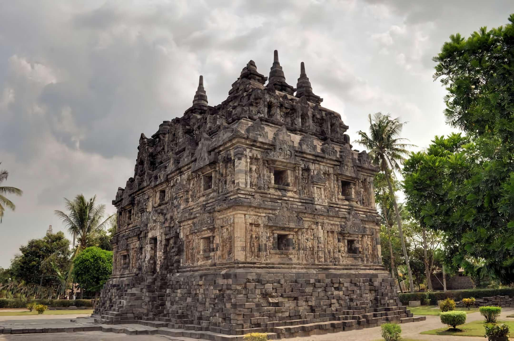Sejarah Singkat Candi Sari
Candi Sari adalah adalah candi Buddha yang berada di Desa Tirtomartani, Kecamatan Kalasan, Kabupaten Sleman, Daerah Istimewa Yogyakarta. Candi ini dibangun pada sekitar abad ke-8 dan ke-9 pada saat zaman Kerajaan Mataram Kuno dengan bentuk yang sangat indah. Pada bagian atas candi ini terdapat 9 buah stupa seperti yang tampak pada stupa di Candi Borobudur dan tersusun dalam 3 deretan sejajar. Bentuk bangunan candi serta ukiran relief yang ada pada dinding candi sangat mirip dengan relief di Candi Plaosan. Beberapa ruangan bertingkat dua berada persis di bawah masing-masing stupa dan diperkirakan dipakai untuk tempat meditasi bagi para pendeta Buddha (biksu) pada zaman dahulu. Candi Sari pada masa lampau merupakan suatu Vihara Buddha, dan dipakai sebagai tempat belajar dan berguru bagi para biksu.
Harga Tiket Masuk : Rp.10.000/person
Candi Kimpulan
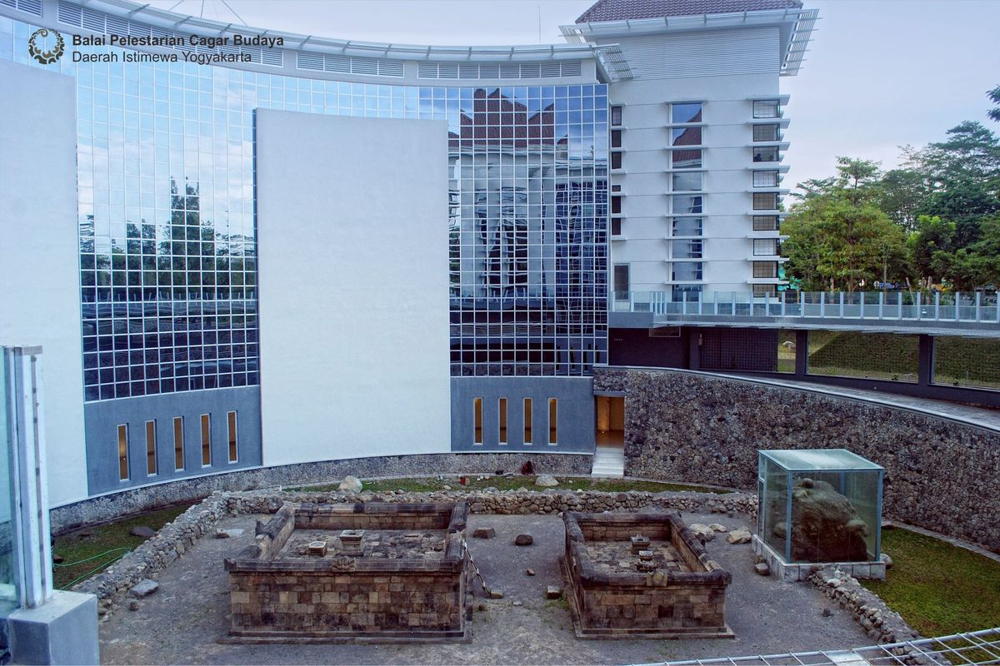Sejarah Singkat Candi Kimpulan
Candi Kimpulan (juga dikenal sebagai candi Pustakasala) adalah sebuah peninggalan purbakala di lokasi kampus Universitas Islam Indonesia (UII) di Dusun Kimpulan, Desa Umbulmartani, Kecamatan Ngemplak, Sleman, Yogyakarta, Indonesia. Lokasi tersebut berada di Jalan Kaliurang km 14,5. (Wikipedia) Candi ini diberi nama Kimpulan berdasarkan letak temuannya yang ada di Dusun Kimpulan. Dari temuan arca dalam candi, candi ini memiliki ciri-ciri sebagai candi beragama Hindu. Angka tahun pendirian candi ini diperkirakan dari abad ke 9. Candi ini ditemukan secara tidak sengaja pada 11 Desember 2009 ketika tengah diadakan penggalian untuk fondasi proyek pembangunan perpustakaan UII. Candi ini terkubur sekitar lima meter di bawah tanah. Seperti Candi Sambisari, Candi Morangan, dan Candi Kedulan, candi ini diperkirakan terkubur bersamaan akibat letusan Gunung Merapi di dekatnya yang meletus sekitar seribu tahun yang lalu. Penemuan candi ini merupakan penemuan arkeologi yang paling menarik di Yogyakarta tahun 2009, serta menimbulkan spekulasi mengenai kemungkinan adanya candi-candi lain yang masih terkubur oleh lahar dan debu vulkanik Gunung Merapi. Candi ini pada saat pertama kali ditemukan dikenal oleh masyarakat luas sebagai Candi UII (Candi Universitas Islam Indonesia), karena ditemukan di lingkungan Kampus UII. BP3 menamai candi ini Candi Kimpulan berdasarkan nama desa setempat. Akan tetapi Yayasan Badan Wakaf UII mengusulkan nama lain, Pustakasala yang berarti “perpustakaan” dalam bahasa Sanskerta. Maksud penamaan ini untuk menekankan sejarah penemuan candi di tempat yang semula hendak dibangun perpustakaan.[1] Nama ini juga untuk menggambarkan nuansa pendidikan universitas, ditambah lagi arca Ganesha yang ditemukan di situs dikenal sebagai dewa ilmu pengetahuan, intelektual, dan kebijaksanaan. Penelitian lebih lanjut dan penggalian arkeologi dilakukan oleh Balai Pelestarian Peninggalan Purbakala (BP3) Yogyakarta. Candi ini jelas bersifat Hindu Siwaistik, dan berdasarkan gaya ukiran dan arca menunjukkan bahwa candi ini dibangun pada kurun waktu abad ke-9 sampai ke-10 pada masa Kerajaan Mataram Kuno. Berdasarkan buku ““Nusantara” karya Bernard H.M. Vlekke dapat dijadikan salah satu acuan untuk penguasa Jawa. Ada banyak versi terkait dengan sejarah kerajaan Hindu-Budha di Jawa beserta garis keturunan Dinasti Shailendra dan Sanjaya. Menurut buku tersebut, di abad ke-9 di pulau jawa tengah bagian selatan terdapat sebuah kerajaan yaitu Medang Kahuripan atau Mataram Kuno. Sekitar abad 9 raja yang bertahta berasal dari Dinasti Sanjaya. Terkait dengan detail sejarahnya, belum ada penelitian lebih detail tentang candi ini. Candi ini memiliki dua perkiraan, pertama pembangunan candi belum selesai atau kedua dibangun oleh masyarakat menengah ke bawah sehingga bentuknya terlihat sangat sederhana.
Harga Tiket Masuk: FREE